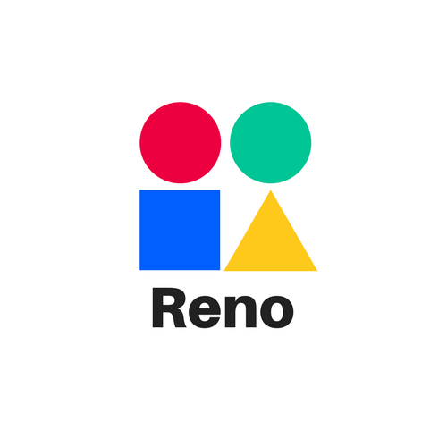

Normally, this page would be your main page on a website.
The package.appxmanifest (Application->Start Page) would point to the main page, and the (Content URIs->URI) would include your web site.
The newly added toolbar should appear below, with share and pinning. The reno/appmap.js file defines anything beyond the default experience.